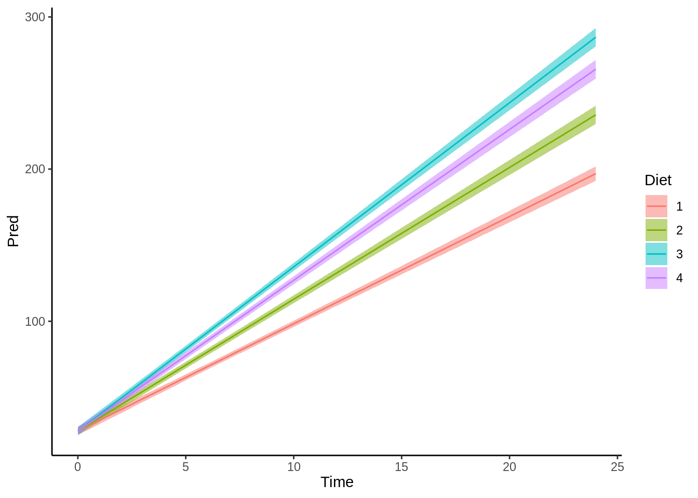

Capítulo 3 Introducción a los (G)LM
3.1 Paquetes necesarios para este capítulo
Para este capitulo necesitas tener instalado los paquetes tidyverse (Wickham 2019), broom (Robinson and Hayes 2020) y MuMIn (Bartoń 2019)
3.1.1 Presentación html
Puedes seguir la clase de los videos en el siguiente link
y ver la clase en vivo desde las 20:30 horas el día jueves 7 de Mayo del 2020 a continuación
3.2 Formula (g)lm con interacciones
Supongamos que tenemos dos variables \(X_1\) categorica e \(X_2\) es continua
- \(C_0\) Intercepto
- \(C_1\) modificador de intercepto para nivel 1
- \(\beta_1\) pendiente de argumento 1
La siguiente sería la formula general para esta ecuación.
\[y = \beta_1X_1 + \beta_2X_2 + \beta_3X_1X_2 + C_0 + C_1\]
3.3 Algunas especificaciones de un modelo lineal
En un modelo lineal, ya sea generalizado o no, debemos tener mucho cuidado con el establecer la formula que vamos a probar, ya que distintas ecuaciones tienen distintos significado en la resolución de porblemas. Para esto veamos la base de datos ChickWeight que viene en R.
Si vemos si vemos en la figura 3.1, vemos el efecto de 4 dietas en el crecimiento de pollos en un criadero desde el día en que nacen.
Figura 3.1: Cambio de peso en pollos con distinta dieta
La pregunta lógica es si es que la dieta tiene un efecto importante en el aumento de peso de estos pollos. En general si uno no piensa mucho el problema, uno podría hacer un modelo lineal, en el cual vemos cual es el efecto de la dieta y del tiempo en el crecimiento de los pollos. Esto generará el siguiente modelo:
Cuando vemos la figura 3.2, inmediatamente debieramos saber que tenemos un problema con nuestro modelo estadístico.
Figura 3.2: Predicciones del modelo 1 en el peso de los pollos según dieta
Este modelo estadístico genera muchas lineas paralelas, en las cuales los pollos de las distintas dietas, en el tiempo 0 tienen distintos pesos, esto no sería conveniente, ya que si esto es verdad, entonces nuestro experimento esta mal diseñado. Además, vemos que todas las lineas tienen la misma pendiente, esto es, si este modelo está bien, nos dice que todas las díetas hacen que los pollos ganen el mismo peso por día, pero que elegimos mal los pollos, o de forma no aleatoria, por que los pollos de la dieta 4 eran mas pesados desde un principio. Al ver la figura 3.1, sabemos que esto no es verdad, lo cual nos indica que elegimos un mal modelo para responder nuestra pregunta.
| term | estimate | std.error | statistic | p.value |
|---|---|---|---|---|
| (Intercept) | 10.924391 | 3.3606567 | 3.250672 | 0.0012189 |
| Time | 8.750492 | 0.2218052 | 39.451248 | 0.0000000 |
| Diet2 | 16.166074 | 4.0858416 | 3.956608 | 0.0000856 |
| Diet3 | 36.499407 | 4.0858416 | 8.933143 | 0.0000000 |
| Diet4 | 30.233456 | 4.1074850 | 7.360576 | 0.0000000 |
Si vemos la tabla (???)(fig:Pollos), vemos que el modelo que utilizamos tan solo tiene una pendiente, por lo que era imposible no tener lineas paralelas en el modelo. Esto nos lleva a tener que generar otro modelo.
3.4 Cambio Pendiente pero no intercepto
Si queremos tenes solo un intercepto, con distintas pendientes para cada dieta, tendremos que utilizar el siguiente modelo:

3.5 Parametros
| term | estimate | std.error | statistic | p.value |
|---|---|---|---|---|
| (Intercept) | 27.858834 | 2.6596172 | 10.474753 | 0e+00 |
| Time | 7.049161 | 0.2573403 | 27.392373 | 0e+00 |
| Time:Diet2 | 1.611209 | 0.3043700 | 5.293588 | 2e-07 |
| Time:Diet3 | 3.738317 | 0.3043700 | 12.282147 | 0e+00 |
| Time:Diet4 | 2.861438 | 0.3085932 | 9.272523 | 0e+00 |
3.6 Calculemos
\[\small Weight = 7.05\times Time + Time \theta_2\times 1.61 + Time \theta_3\times 3.74 + Time \theta_4\times 2.86 + 27.86\]
- Nuevos datos
| Time | Diet |
|---|---|
| 3 | 1 |
| 4 | 4 |
## [1] 49.01## [1] 67.5
3.8 Parametros
| term | estimate | std.error | statistic | p.value |
|---|---|---|---|---|
| (Intercept) | 30.9309803 | 4.2468279 | 7.2833138 | 0.0000000 |
| Time | 6.8417972 | 0.3407938 | 20.0760630 | 0.0000000 |
| Diet2 | -2.2973848 | 7.2672309 | -0.3161293 | 0.7520201 |
| Diet3 | -12.6806551 | 7.2672309 | -1.7449088 | 0.0815397 |
| Diet4 | -0.1388608 | 7.2864589 | -0.0190574 | 0.9848020 |
| Time:Diet2 | 1.7673391 | 0.5716680 | 3.0915481 | 0.0020885 |
| Time:Diet3 | 4.5810738 | 0.5716680 | 8.0135216 | 0.0000000 |
| Time:Diet4 | 2.8725684 | 0.5781161 | 4.9688434 | 0.0000009 |
3.9 Calculemos
\[\scriptsize Weight = 6.84\times Time + Time \theta_2\times 1.77 + Time \theta_3\times 4.58 + Time \theta_4\times 2.87 + 30.93 + -2.3\theta_2 + -12.7\theta_3 + -0.14\theta_4\]
| Time | Diet |
|---|---|
| 3 | 1 |
| 4 | 4 |
(6.84 * 3) + (3 * 0 * 1.77) + (3 * 0 * 4.58) + (3 * 0 * 2.87) +
30.93 + (-2.3 * 0) + (-12.7 * 0) + (-0.14 * 0)## [1] 51.45(6.84 * 4) + (4 * 0 * 1.77) + (4 * 0 * 4.58) + (4 * 1 * 2.87) +
30.93 + (-2.3 * 0) + (-12.7 * 0) + (-0.14 * 1)## [1] 69.633.10 Cual es el mejor modelo?
| (Intercept) | Diet | Time | Diet:Time | df | logLik | AICc | delta | weight | |
|---|---|---|---|---|---|---|---|---|---|
| 2 | 27.85883 | NA | 7.049161 |
|
6 | -2857.238 | 5726.622 | 0.00000 | 7.934151e-01 |
| 3 | 30.93098 |
|
6.841797 |
|
9 | -2855.498 | 5729.313 | 2.69127 | 2.065849e-01 |
| 1 | 10.92439 |
|
8.750492 | NA | 6 | -2888.804 | 5789.755 | 63.13235 | 1.550545e-14 |

3.12 Es la varianza constante?
ggplot(Test, aes(x = .fitted, y = .resid)) + geom_point() + theme_classic() +
geom_hline(yintercept = 0, lty = 2, color = "red")
References
Bartoń, Kamil. 2019. MuMIn: Multi-Model Inference. https://CRAN.R-project.org/package=MuMIn.
Robinson, David, and Alex Hayes. 2020. Broom: Convert Statistical Analysis Objects into Tidy Tibbles. https://CRAN.R-project.org/package=broom.
Wickham, Hadley. 2019. Tidyverse: Easily Install and Load the ’Tidyverse’. https://CRAN.R-project.org/package=tidyverse.